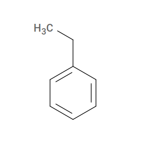

Monomers¶
In this section, we describe how the inputs GMA.mol2 and STY.mol2 are generated for the bisGMA and styrene monomers, respectively. Since this represents an instance where a new system is being generated, let’s begin by creating an empty directory and then populating with a “molecule library”:abbr:
$ cd
$ mkdir my_ve_styrene_build
$ cd my_ve_styrene_build
$ mkdir lib
$ mkdir lib/molecules
$ mkdir lib/molecules/inputs
$ mkdir lib/molecules/parameterized
$ cd lib/molecules/inputs
Now we can generate the two required *.mol2 files.
BisGMA¶

Bisphenol A-glycidyl methacrylate, or “BisGMA”, is a crosslinking monomer that can be used in vinyl ester resin formulations. In the structure above, we have shown the terminal double bonds as hydrogenated in accordance with our use of sacrificial hydrogens during cure. In analogy with the poly(methyl styrene) example, we will call the radical carbon C1 and its partner C3; since there are two double bonds that can react in bisGMA, we will call the other radical carbon C2 and its partner C4. There are four stereocenters: in the non-hydrogenated molecule, both C1 and C2 are chiral (even though they are not in the hydrogenated version, we must treat them as chiral since they will be if the monomer reacts!); and the two others we will term C5 and C6. The following command uses the SMILES string for bisGMA as input and correctly names the important atoms:
$ echo "CC(C)C(=O)OCC(COC1=CC=C(C=C1)C(C)(C)C2=CC=C(C=C2)OCC(COC(=O)C(C)C)O)O" | \
obabel -ismi -h --gen3d --title GMA -omol2 | \
sed s/" 1 C "/" 1 C3"/ | \
sed s/" 2 C "/" 2 C1"/ | \
sed s/" 8 C "/" 8 C5"/ | \
sed s/"33 C "/"33 C2"/ | \
sed s/"34 C "/"34 C4"/ | \
sed s/"28 C "/"28 C6"/ | \
sed s/"UNL1 "/"GMA "/ > GMA.mol2
Styrene¶
The command below generates a mol2 file for styrene in which the radical carbon is C1 and its partner is C2:
$ echo "C1=CC=CC=C1CC" | \
obabel -ismi -omol2 -h --gen3d --title STY | \
sed s/" 7 C "/" 7 C1"/ | \
sed s/" 8 C "/" 8 C2"/ | \
sed s/"UNL1 "/"STY "/ > STY.mol2
The next thing we consider is how to create the reaction dictionaries necessary to describe the crosslinking chemistry.